Visualizations of Australia's Population Grid
Introduction
The Australian Bureau of Statistics (ABS) make available a population grid. Essentially, they estimate the population living in each 1 kilometre grid cell, and make this available as a GeoTIFF (amongst other formats). There is a lot of tricky estimating to go from the usual Census data to a mesh grid, that is explained in the website. I thought it might be fun to look at visualizing this in different ways.
I found myself chasing down some interesting cartographic rabbit holes, and learnt a useful Pandas trick.
Data Sources
You can find the population grid GeoTIFF at http://www.abs.gov.au/ausstats/abs@.nsf/mf/1270.0.55.007
Data Exploration
The first thing I did was to read the GeoTIFF, and work out what projection was used.
pop = gdal.Open('d:\\qml\\Australian_Population_Grid_2011.tif')
data = pop.ReadAsArray()
gt = pop.GetGeoTransform()
proj = pop.GetProjection()
inproj = osr.SpatialReference()
inproj.ImportFromWkt(proj)
print( "[ RASTER BAND COUNT ]: ", pop.RasterCount)
cols = pop.RasterXSize
print('cols = ',cols)
rows = pop.RasterYSize
print(' rows = ', rows)
bands = pop.RasterCount
print('bands = ', bands)
driver = pop.GetDriver().LongName
print('driver =', driver)
print('MetaData = ',pop.GetMetadata())
print(inproj)
giving the following output.
[ RASTER BAND COUNT ]: 1
cols = 6382
rows = 3821
bands = 1
driver = GeoTIFF
MetaData = {'AREA_OR_POINT': 'Area', 'DataType': 'Generic'}
PROJCS["GDA_1994_Albers",
GEOGCS["GCS_GDA_1994",
DATUM["Geocentric_Datum_of_Australia_1994",
SPHEROID["GRS_1980",6378137,298.257222101,
AUTHORITY["EPSG","7019"]],
AUTHORITY["EPSG","6283"]],
PRIMEM["Greenwich",0],
UNIT["degree",0.0174532925199433]],
PROJECTION["Albers_Conic_Equal_Area"],
PARAMETER["standard_parallel_1",-18],
PARAMETER["standard_parallel_2",-36],
PARAMETER["latitude_of_center",0],
PARAMETER["longitude_of_center",132],
PARAMETER["false_easting",0],
PARAMETER["false_northing",0],
UNIT["metre",1,
AUTHORITY["EPSG","9001
A couple of things jumped out at me.
-
First, they are using an Albers Equal Area Projection in which to draw the mesh grid. It makes sense to use a Equal Area projection (not to use one would be weird), but the choice of Albers is unexplained in any documentation I could find. There is an European Union project that is very similar (GEOSTAT 1A � Representing Census data in a European population grid), that uses a different projection. However, the EU case is made harder for the statiticians because the EU has to match the use of grids in differing projections by its member states. In any case they seem to be using a Lamberth Azimuthal Equal Area.
-
Second, the projection uses an Australian-specific Datum
GDA94. A very helpful website http://www.homer.com.au/webdoc/gis/wgs84fact.pdf explains that" ... keep in mind that GDA94 coordinates are fixed as at the 1st January 1994 (epoch 1994.0) and that the Australian plate is drifting in a north-easterly direction about seven centimetres per year."
It appears that the Spheroid used is almost exactly the same as WGS84, which is a relief. We can use the default Globe provided by Cartopy.
Map Time!
Global Albers
The first thing is to create a Cartopy Coordinate Reference System (CRS) to match the GeoTIFF:
albo = ccrs.AlbersEqualArea(central_latitude=0,
false_easting=0,
false_northing=0,
central_longitude=132,
standard_parallels=(-18, -36) )
and then see what the world looks like in this projection.
fig = plt.figure(figsize=(20,20))
ax = fig.add_subplot(1, 1, 1, projection= albo )
ax.set_global()
ax.coastlines()
#plt.imshow(data, extent=extent_tif, transform=albo)
plt.title('World in Albers Equal Area (centered on Australia)', {'fontsize':30}, pad=40)
plt.show()
This gives us:
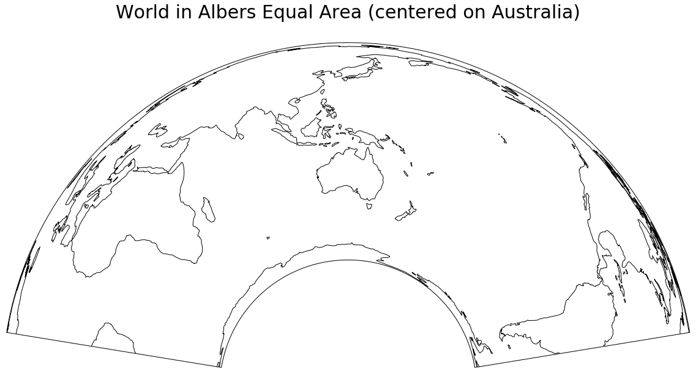
A larger version is here
{kind=link}
Zoom in to Australia
We can calculate the extent of the GeoTIFF by:
extent_tif = (gt[0], gt[0] + pop.RasterXSize * gt[1],
gt[3] + pop.RasterYSize * gt[5], gt[3])
So let us use that extent (in the albo projection units) to zoom into Australia, show the TIFF file, and plot some coastlines. The TIFF file is a single band, and we use the default color map to map population density to a color.
fig = plt.figure(figsize=(20,20))
ax = fig.add_subplot(1, 1, 1, projection= albo )
ax.set_extent(extent_tif, crs=albo)
ax.coastlines(color='white', zorder=5)
plt.imshow(data, extent=extent_tif, transform=albo, )
plt.title('Australian Population Grid, Albers Equal Area', {'fontsize':30}, pad=40)
plt.show()
This gives us:
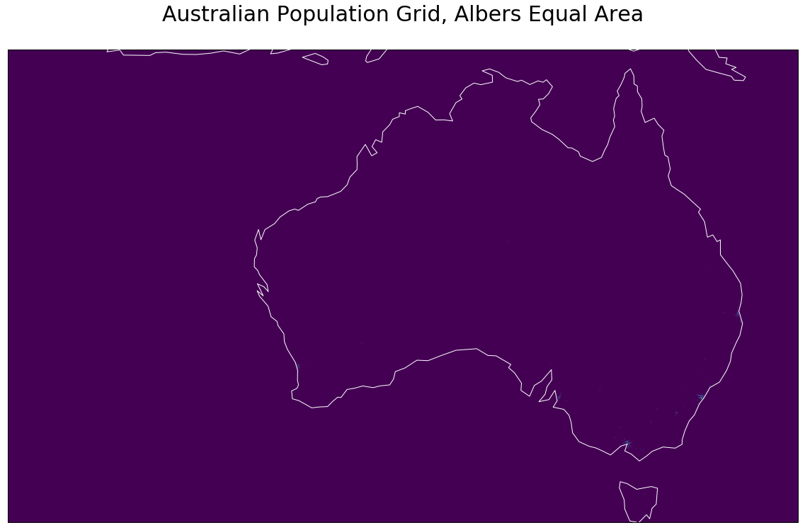
A larger version is here
{kind=link}
As this stage it started to dawn on me that:
-
The map probably extends so far west, so to include various islands that are part of Australia;
-
You have to look very hard to see the odd pixel that has a non-zero value
In a Global Context
The code:
fig = plt.figure(figsize=(20,20))
ax = fig.add_subplot(1, 1, 1, projection= albo )
#ax.set_extent(extent_tif, crs=albo)
ax.set_global()
ax.coastlines(color='blue', zorder=5)
plt.imshow(data, extent=extent_tif, transform=albo, )
plt.title('Australian Population Grid in World Context\nAlbers Equal Area', {'fontsize':30}, pad=40)
plt.show()
shows Australia in a global context, and reinforces the fact that our grid is rectangular (but only in the albo projection); we will come back to this later. At this scale, Australia's centres of population are so small you can't see them.
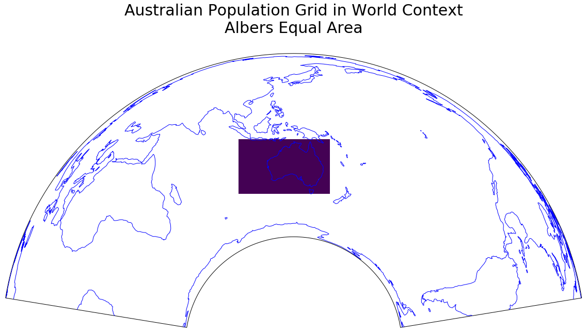
A larger version is here
{kind=link}
In a Local Context
My local patch (that I use quite often for examples) can be defined by:
local = ( 153, 153.2, -26.6, -26.4)
This defines the minimum and maximum longitude, followed by minimum and maximum latitude.
We display the Open Street Map tiles that cover this region, and then overlay the population grid over this. I use a trick with matplotlib color-maps; I define the color of the pixels that are under a (to be defined) value to be white, with alpha=0; effectively, I set these pixels to be transparent. Then when I call imshow, I set that value to 60 (vmin=60). This gives me a map with areas under 60 people per square kilometre to be clear, and rest to have a color-coded shading applied (alpha=0.5).
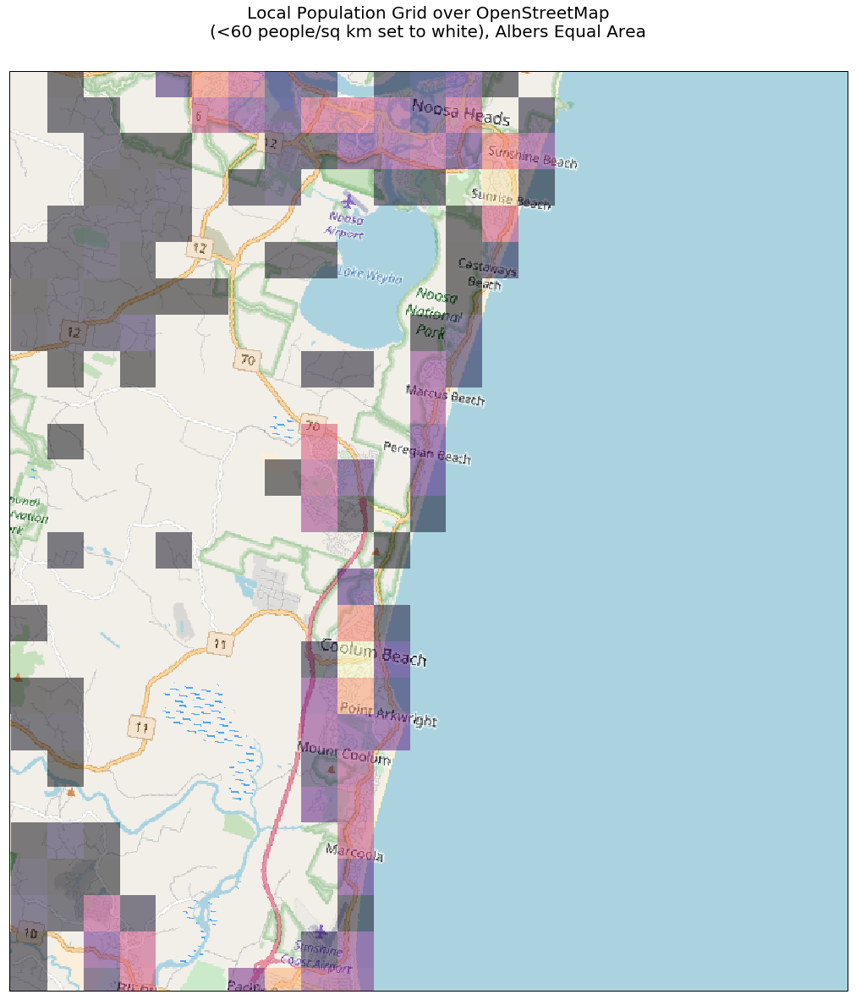
A larger version is here
{kind=link}
To pursue this theme a little, in the next example we set the over value behaviour to be fully transparent, and the under value behaviour to be black, almost opaque alpha=0.8.
my_cmap.set_over('white', alpha=0)
my_cmap.set_under('black', alpha=0.8)
This serves to hide relatively unpopulated areas, and highlight those more densely populated areas. The imshow call sets the value to be 100 (people per square kilometre)
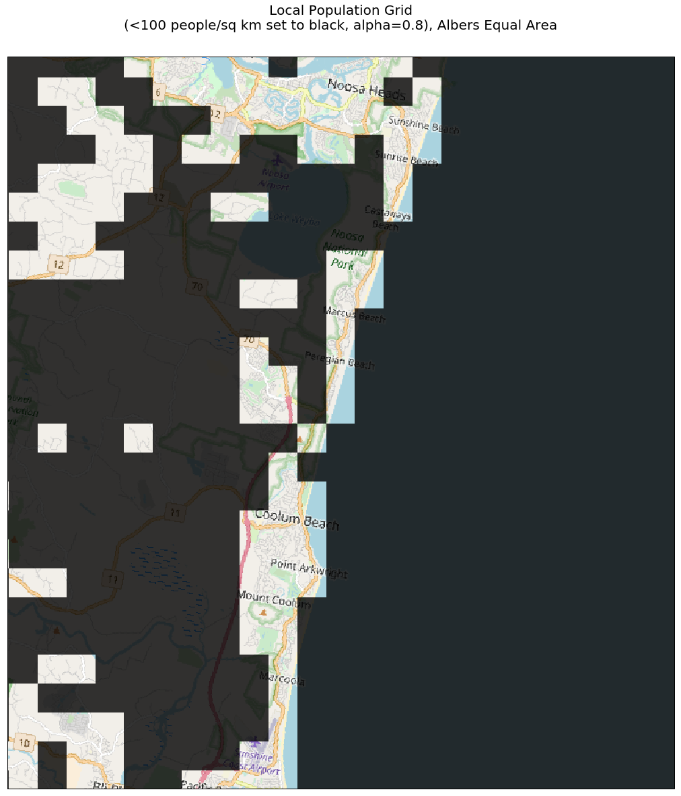
A larger version is here
{kind=link}
In a Continental Context
The following code plots each pixel of the GeoTIFF (except zero population cells are left transparent), and again, while it shows the emptiness of Australia, it does not really let you see where the majority of the population are to be found.
fig = plt.figure(figsize=(20,20))
ax = fig.add_subplot(1, 1, 1, projection= albo )
#ax.set_extent(extent_tif, crs=albo)
ax.set_extent(extent_tif, crs=albo )
ax.coastlines(zorder=9)
my_cmap = plt.cm.get_cmap('magma')
my_cmap.set_under('white', alpha=0)
plt.imshow(data, extent=extent_tif, transform=albo, cmap=my_cmap, vmin=1, vmax=20000, zorder=8)
plt.title('Australian Population Grid\n Linear Scale. Albers Equal Area', {'fontsize':20}, pad=40)
plt.show()
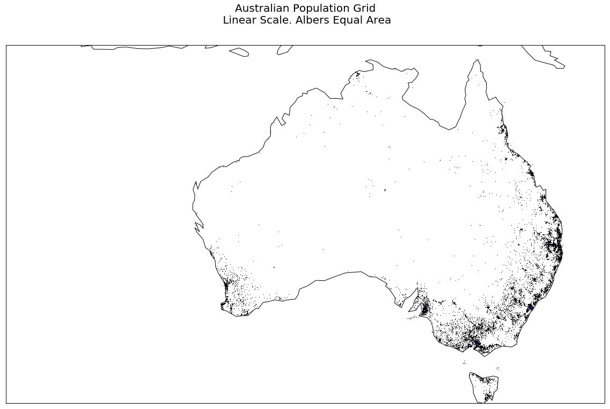
A larger version is here
{kind=link}
If we use a Log scale (norm=colors.LogNorm(vmin=data.min()+1, vmax=data.max()) )for our mapping to a color from our color map, we get, via:
fig = plt.figure(figsize=(20,20))
ax = fig.add_subplot(1, 1, 1, projection= albo )
#ax.set_extent(extent_tif, crs=albo)
ax.set_extent(extent_tif, crs=albo )
ax.coastlines(zorder=9)
ax.gridlines()
my_cmap = plt.cm.get_cmap('magma')
my_cmap.set_under('white', alpha=1)
pcm = plt.imshow(data, extent=extent_tif, transform=albo, cmap=my_cmap,norm=colors.LogNorm(vmin=data.min()+1, vmax=data.max()), zorder=8)
cbar = fig.colorbar(pcm, ax=ax, shrink=0.5, pad=0.1, extend='min')
cbar.ax.set_ylabel('Population density (people per sq km): Log Scale', rotation=270, labelpad=20)
cbar.ax.set_title('Population Density Legend')
plt.title('Australian Population Grid\nLog Scale. Albers Equal Area', {'fontsize':20}, pad=40)
plt.show()
a more useful display.
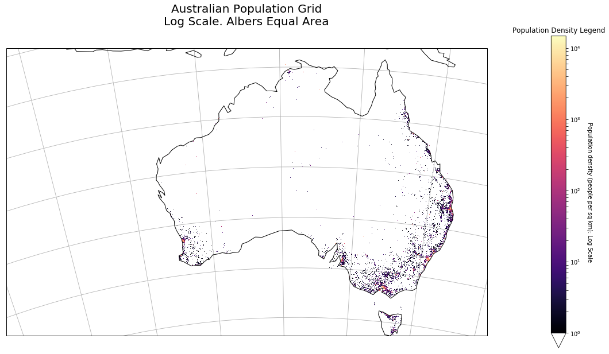
A larger version is here
{kind=link}
Hitting the data with a rebin hammer
Suppose we have a numpy array that looks like:
a = np.array([[ 1, 2, 3, 4, 5, 6],
[ 5 ,6, 7, 8, 7, 8],
[ 9,10,11,12, 13, 14],
[13,14,15,16, 17, 18]])
and we define a function that look like:
def shrink(data, rows, cols):
return data.reshape(rows, data.shape[0]//rows, cols, data.shape[1]//cols).sum(axis=1).sum(axis=2)
then
print(shrink(a, 2, 3))
gives us:
[[14 22 26]
[46 54 62]]
That is, we have taken our original 4 row, 6 column array, and reduced it to a 2 row, 3 column array, with each element holding the sum of the sub-array that has been collapsed.
We have data.shape gives (3821, 6382), so we take a chunk that is a multiple of 100 in row and column directions.
We then shrink our data by data3 = shrink(data2, 38, 63).
Now the simplest possible display shows some non-zero values.
plt.imshow(data3)
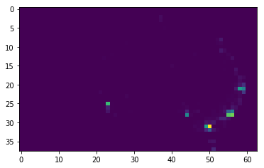
A larger version is here
{kind=link}
Bubble Plot
In the next example, we plot a red bubble at each zon-zero cell of the grid. We also draw the grid itself (very faintly, alpha=0.2).
fig = plt.figure(figsize=(20,20))
ax = fig.add_subplot(1, 1, 1, projection=albo)
ax.set_extent(extent_tif, crs=albo )
mksize_min = 0
mksize_max = 200
data_min = data3.min()
data_max = data3.max()
down_scale_factor = 100
#extent_tif = (gt[0], gt[0] + pop.RasterXSize * gt[1],
# gt[3] + pop.RasterYSize * gt[5], gt[3])
x_step = gt[1]
y_step = gt[5]
for ix in range(data3.shape[1]):
for iy in range(data3.shape[0]):
row = data3.shape[0] - iy -1
col = ix
albo_x = extent_tif[0] + x_step*(ix+0.5) * down_scale_factor
albo_y = extent_tif[2] + abs(y_step)* (iy+0.5) * down_scale_factor
markersize=mksize_min + (mksize_max-mksize_min)*(data3[row, col]-data_min)/(data_max-data_min)
plt.plot(albo_x, albo_y ,
markersize=markersize,
marker='o',
color='red',
alpha=0.25, zorder=9)
#end for
#end for
for ix in range(data3.shape[1]):
albo_x = extent_tif[0] + x_step*ix * down_scale_factor
plt.plot([albo_x, albo_x] , [extent_tif[2], extent_tif[3]], linestyle='-', color='lightgrey', alpha=0.2)
#end for
for iy in range(data3.shape[0]):
albo_y = extent_tif[2] + abs(y_step)* iy * down_scale_factor
plt.plot([extent_tif[0], extent_tif[1] ] , [albo_y, albo_y], linestyle='-', color='lightgrey', alpha=0.2)
#end for
ax.coastlines()
ax.gridlines()
plt.title('Australian Population Grid\n Binned over 100km Grid. Albers Equal Area', {'fontsize':20}, pad=40)
plt.show()
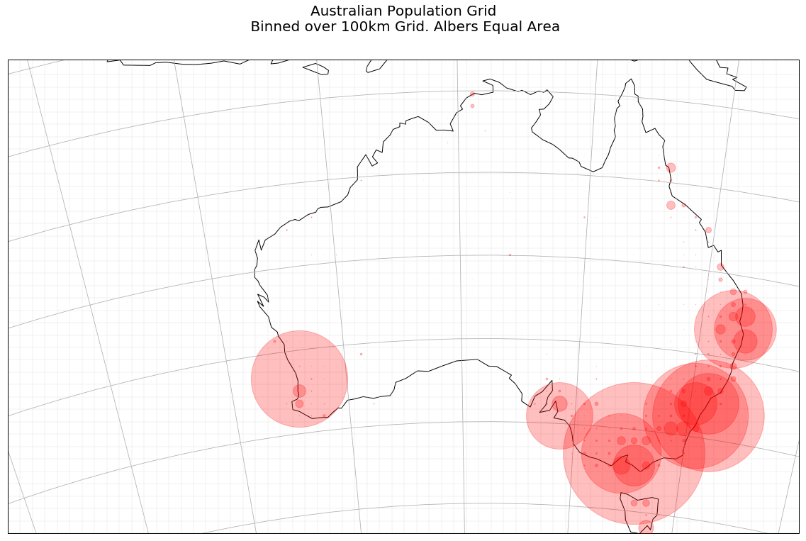
A larger version is here
{kind=link}
Cell Plot
Now, when we plot the value of each cell, using a Log scale, we get a more understandable graphic. You can see Australians for the most part hugging the coastline; you can see the big mining towns like Mount Isa and Broken Hill.
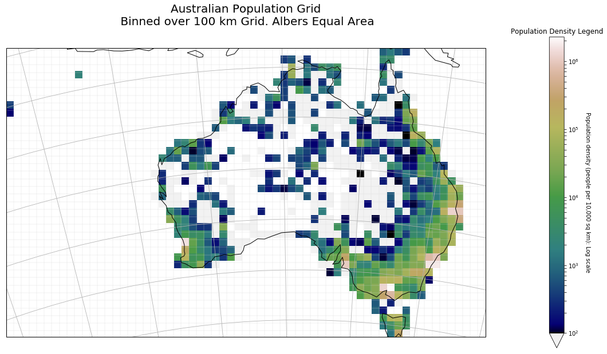
A larger version is here
{kind=link}
The code that produced this is below: as before, we plot the grid lines faintly (straight lines in this projection).
fig = plt.figure(figsize=(20,20))
ax = fig.add_subplot(1, 1, 1, projection=albo)
data3_ext = [extent_tif[0], extent_tif[0]+ x_step*data3.shape[1]*down_scale_factor,
extent_tif[3], extent_tif[3]+ (y_step)* data3.shape[0]*down_scale_factor]
#ax.set_global()
ax.set_extent(data3_ext, crs=albo )
my_cmap = plt.cm.get_cmap('gist_earth')
#my_cmap.set_under('grey', alpha=0.1)
ax.coastlines( zorder=9)
pcm = plt.imshow(data3,
extent=data3_ext,
transform=albo,
vmin=100,
cmap=my_cmap,
zorder=1,
origin='top',
norm=colors.LogNorm( ), #vmin=data3.min()+1, vmax=data3.max()),
)
cbar = fig.colorbar(pcm, ax=ax, shrink=0.5, pad=0.1, extend='min')
cbar.ax.set_ylabel('Population density (people per 10,000 sq km): Log scale', rotation=270, labelpad=20)
cbar.ax.set_title('Population Density Legend')
for ix in range(data3.shape[1]):
albo_x = extent_tif[0] + x_step*ix * down_scale_factor
plt.plot([albo_x, albo_x] , [extent_tif[2], extent_tif[3]], linestyle='-', color='lightgrey', alpha=0.2)
#end for
for iy in range(data3.shape[0]):
albo_y = extent_tif[2] + abs(y_step)* iy * down_scale_factor
plt.plot([extent_tif[0], extent_tif[1] ] , [albo_y, albo_y], linestyle='-', color='lightgrey', alpha=0.2)
#end for
ax.gridlines()
plt.title('Australian Population Grid\n Binned over 100 km Grid. Albers Equal Area', {'fontsize':20}, pad=40)
plt.show()
Plate Carree Map
Finally, just for fun, I plot the map in the Plate Carree projection. This makes the population grid look curved, but thtis to be expected. I also decided that I wanted to distinguish between a population count of zero because there is nobody there on land, and because it is out to sea.
I learned a few things, because I decided to draw the non-rectangular patches myself (imshow seems to be very slow in reshaping an image).
First, we calculate the extent of the GeoTiff in longitude, latitude units.
x1, y1 = ccrs.PlateCarree().transform_point(-3853000.0, -4835000.0, albo)
x2, y2 = ccrs.PlateCarree().transform_point(2529000.0, -1014000.0, albo)
Then the usual preamble to set up the Figure, and the Cartopy aware Axes objects. Note we go down an extra 3 degree of latitude, because the Albers grid sinks down below the lines of constant latitude.
fig = plt.figure(figsize=(20,20))
pc_proj = ccrs.PlateCarree()
ax = fig.add_subplot(1, 1, 1, projection= pc_proj )
ax.set_extent((x1, x2, y1-3.0, y2), crs=ccrs.Geodetic())
ax.coastlines(color='blue', zorder=5)
We define the limits of our data values:
dmax = data3.max()
dmin = 0
We now use GeoPandas to read the Australian coastline, and fill the interior with light grey.
# get country borders
resolution = '10m'
category = 'cultural'
name = 'admin_0_countries'
shpfilename = shapereader.natural_earth(resolution, category, name)
# read the shapefile using geopandas
df = gpd.read_file(shpfilename)
# read the borders
poly = df.loc[df['ADMIN'] == 'Australia']['geometry'].values[0]
ax.add_geometries(poly,
crs=ccrs.PlateCarree(),
facecolor='lightgrey',
edgecolor='blue', zorder=1, alpha=0.75)
ax.add_geometries(poly,
crs=ccrs.PlateCarree(),
facecolor='none',
edgecolor='blue', zorder=15, alpha=0.75)
We then cycle through all the cells of the 100 km grid, transforming the Albers coordinated into Plate Carree coordinates (longitude and latitude), and draw the grid faintly (alpha=0.2). Then if there is anybody at all living in this 100 km grid cell, we create a patch, and remember its color. We use the terrain color map.
At the end we create a PatchCollection, set the colors, and add them to the Axes object.
We then draw lat/lon gridlines, and set a title.
fig = plt.figure(figsize=(20,20))
pc_proj = ccrs.PlateCarree()
ax = fig.add_subplot(1, 1, 1, projection= pc_proj )
ax.set_extent((x1, x2, y1-3.0, y2), crs=ccrs.Geodetic())
# get country borders
resolution = '10m'
category = 'cultural'
name = 'admin_0_countries'
shpfilename = shapereader.natural_earth(resolution, category, name)
# read the shapefile using geopandas
df = gpd.read_file(shpfilename)
# read the german borders
poly = df.loc[df['ADMIN'] == 'Australia']['geometry'].values[0]
ax.add_geometries(poly,
crs=ccrs.PlateCarree(),
facecolor='lightgrey',
edgecolor='blue', zorder=1, alpha=0.75)
ax.add_geometries(poly,
crs=ccrs.PlateCarree(),
facecolor='none',
edgecolor='blue', zorder=15, alpha=0.75)
dmax = data3.max()
dmin = 0
patches = []
colors = []
for ix in range(data3.shape[1]):
albo_x1 = extent_tif[0] + x_step*ix * down_scale_factor
albo_x2 = extent_tif[0] + x_step*(ix+1) * down_scale_factor
for iy in range(data3.shape[0]):
albo_y1 = extent_tif[2] + abs(y_step)* iy * down_scale_factor
albo_y2 = extent_tif[2] + abs(y_step)* (iy + 1) * down_scale_factor
gx1, gy1 = pc_proj.transform_point(albo_x1, albo_y1, albo)
gx2, gy2 = pc_proj.transform_point(albo_x1, albo_y2, albo)
gx3, gy3 = pc_proj.transform_point(albo_x2, albo_y2, albo)
gx4, gy4 = pc_proj.transform_point(albo_x2, albo_y1, albo)
plt.plot([gx1, gx2, gx3, gx4, gx1], [gy1, gy2, gy3, gy4, gy1],
linestyle='-',
color='lightgrey',
alpha=0.2,
zorder=15,
)
if(data3[data3.shape[0]-iy-1, ix]>1):
this_color = cm.terrain(math.log10(data3[data3.shape[0]-iy-1, ix]-dmin) / math.log10(dmax-dmin) )
box = Polygon([[gx1, gy1], [gx2, gy2], [gx3, gy3], [gx4, gy4] ],)
patches.append(box)
colors.append(this_color)
#end for
#end for
p = PatchCollection(patches)
p.set_color(colors)
p.set_edgecolor('lightblue', )
p.set_zorder(9)
ax.add_collection(p,)
gl = ax.gridlines(draw_labels=True)
gl.xformatter = LONGITUDE_FORMATTER
gl.yformatter = LATITUDE_FORMATTER
plt.title('Australian Population Grid\nRebinned to 100 km Grid - Log Scale. Plate Carree', {'fontsize':20}, pad=40)
plt.show()
We get a map like:
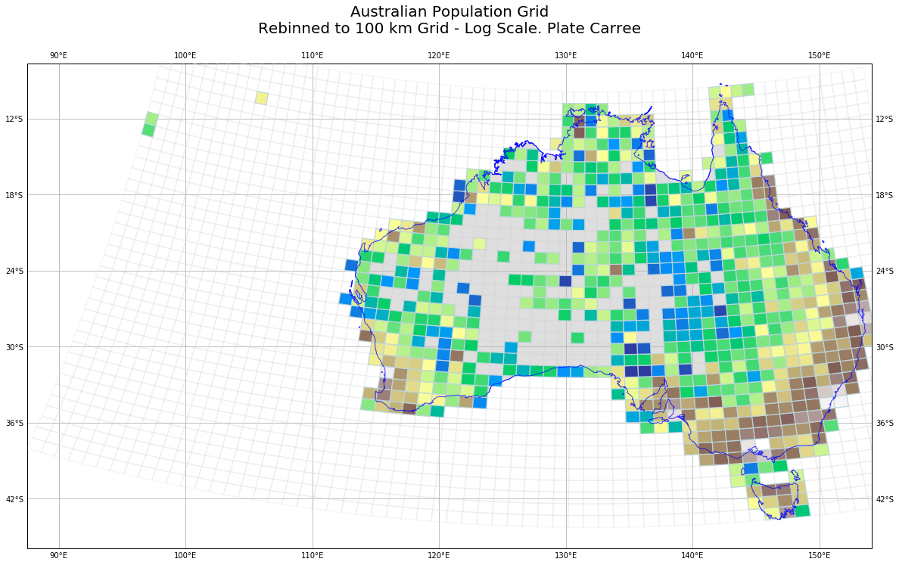
A larger version is here
{kind=link}
Conclusion
For completeness, here are the imports for this Jupyter Notebook (not all are used in the code fragments above, as some are for producing output to support reproducability).
# all imports should go here
import pandas as pd
import sys
import os
import subprocess
import datetime
import platform
import datetime
import cartopy.crs as ccrs
from cartopy.io.img_tiles import GoogleTiles
from cartopy.io.img_tiles import OSM
import cartopy.feature as cfeature
from cartopy.mpl.gridliner import LONGITUDE_FORMATTER, LATITUDE_FORMATTER
from cartopy.io import shapereader
from osgeo import gdal, osr
import matplotlib.pyplot as plt
import matplotlib.colors as colors
from matplotlib.patches import Polygon
from matplotlib.collections import PatchCollection
import matplotlib.cm as cm
import numpy as np
import math
import geopandas as gpd